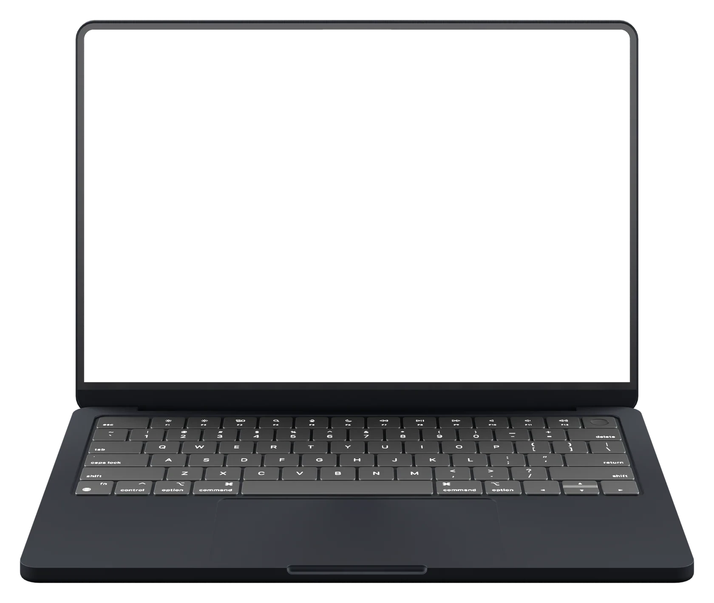

How the website is built
Six pages, made from finished files, with the photos, sentences and menu of The Cat & Gun.
Six pages


The website has six pages. Every page works on a phone as well as on a computer.
What it is made of
There is no website builder and no plugin. Every line is written for The Cat & Gun.
The website consists of finished files. When a guest opens a page, no program runs and no database is asked. There is no login on the pages that could be attacked.
Every photo comes in four sizes. Each device loads only the size it needs, so the pages also open on slow mobile data.
Opening hours, address, phone and menu sit in the code in a form that Google and AI assistants can read.
Who changes what
Two tools change the website. Each part of a page belongs to exactly one of them.
- Edit website: texts, photos, phone, address, opening hours, times and sizes, and the notice for guests on top of every page.
- Menus & price lists: every dish, drink and price of the menu, and the Menu page of the website. In Edit website, dishes, drinks and prices are visible but locked, with a way to Menus & price lists.
- Inquiries & chat: the answers of the chat. The chat is not on the website yet.
Where it is today
Today the website opens at tastyrob123.github.io/the-cat-and-gun/website. Once you have bought the domain, Tasty Studios connects the website to it, and the same pages run under your own address.
Lesson 01 of 04 · 0 of 4 read
Next lesson: How the website and the tools fit together
Four lessons in text and pictures.

How the website and the tools fit together
Each fact is kept in one place. Every change waits in a draft until you publish it.

The nine tools
What each tool is for, and the guide that shows it.

Where it runs and what it costs
Website and tools run in the Cloudflare account of The Cat & Gun, on the free plan.